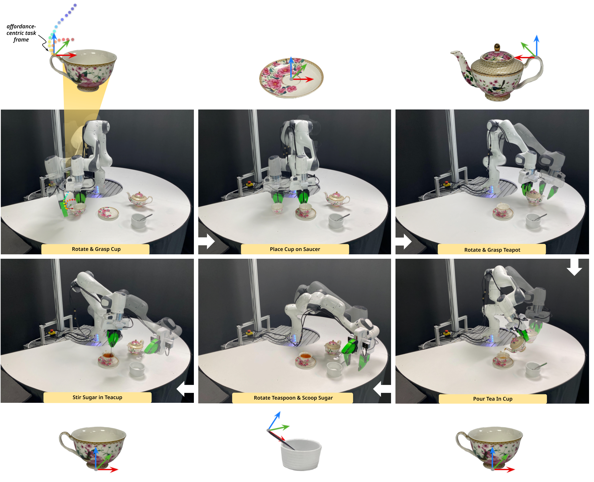

Affordance-Centric Policy Decomposition : Generalisable and Sample Efficient Robot Policy Learning for Multi-Object, Long-Horizon Manipulation
Please refer to attached supplementary material (.zip) for more results and details.
Abstract
Long-horizon manipulation tasks involving multiple different objects present several challenges for imitation learning, with resulting policies exhibiting poor sample efficiency, generalisation, and modularity. Central to these limitations is the use of images and absolute coordinate systems to capture the state of the world. Without extensive demonstration datasets, these representations constrain the policy to operate over a closed set of spatial locations, intra-category instances, and even task variations. In this paper, we present a method to address these challenges using affordance-centric coordinate frames. By appropriately reorienting this frame and training a state-based policy using this relative coordinate system, we demonstrate that we can not only learn highly sample-efficient manipulation behaviours but also generalise to a wide range of spatial and intra-category object variations. More importantly, we show that this representation allows us to learn independent sub-policies that can be seamlessly composed together to solve complex, long-horizon, multi-object tasks, with the modularity for compositional generalisation to new task variations. We extensively validate our approach on a real-world tea-serving task involving 5 different objects, 13 intra-category object variations, and 7 different sub-tasks exhibiting a vast range of spatial variations, demonstrating our ability to solve the entire long-horizon task with the equivalent of only 10 demonstrations.
Overview

Affordance-Centric Policy Decomposition factorises multi-object, long-horizon manipulation tasks into a series of sub-policies trained with respect to an affordance-centric task frame. The relative task frame allows us to learn policies that are spatially invariant, while the specifc placement of the frames at a task-relevant affordance-centric region on an object allows for intra-category invariance. Each diffusion policy is trained to additionally predict self-progress across a sub-task enabling it to autonomously transition between sub-tasks in order to complete longer-horizon tasks.
Results
Long-Horizon Manipulation

We demonstrate the ability to learn complex long-horizon, multi-object tasks involving prehensile and non-prehensile manipulation actions such as scooping, pouring and pushing. The resulting spatial invariance allows for compositional generalisation to a wide range of object and inter-object spatial variations when solving multi-object tasks.
Spatial Generalisation

All policies are trained using demonstrations collected within a small workspace. We demonstrate the ability to generalise to a wide range of spatial variations beyond this training workspace, including object and intra-object placement variations.
Intra-Category Generalisation
The specific placement of our affordance centric task frames allows us to capture the important task relevant regions on objects required for manipulation for a wide range of intra-category object variations. This allows us to abstract away from using images and learn state-based policies with the ability to generalise to a wide range of intra-category object variations from the 10 demonstrations collected on a single object category instance.
Policy Robustness
Perturbations
By training a closed-loop diffusion policy that operates on tracked affordance centric task frames, our policies can handle dynamic object disturbances during deployment.
Distractor Objects
Our simplified state representation allows us to learn policies that are robust to distractor objects in the environment.
Robot Base Movements
By training policies with respect to a relative task frame located on objects, we can learn policies that are robust to robot base movements during deployment with applicability to mobile manipulation.
Related Works

This work is motivated and enabled by the significant progress made in prior works developing generalist vision systems for keypoint extraction and pose tracking.
Keypoint identification: kPAM, Dense Object Nets, DINO ViT Features, D3Fields
Pose estimation and tracking: Foundation Pose, BundleSDF